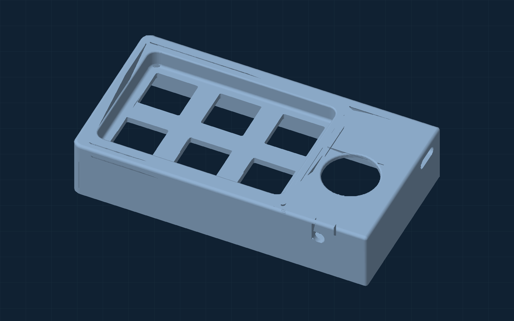
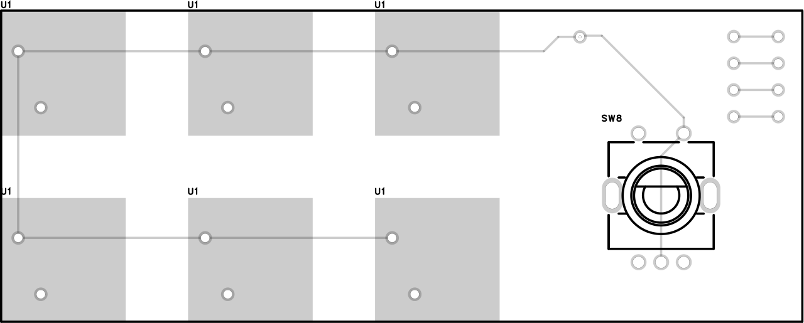

Micropad.
A small wireless keyboard for the shortcuts I use every day.
I brought an ESP32, six mechanical red-switch keys, a rotary encoder, a custom PCB and a 3D-printed case together in one Bluetooth input device.
See how it was built
Mechanical red switches
Rotary encoder with push switch
Wireless keyboard input
Media, productivity, custom
Electronic design
Six switches, one encoder, one board.
I designed a PCB for the key switches and rotary control. The board layout shows two rows of three switch positions and the encoder footprint at one end. The project files include the PCB design, Gerbers and a board drawing for fabrication.

Mechanical red switches make the six main inputs tactile and compact.
An ESP32 reads the inputs and sends Bluetooth keyboard commands to the paired computer.
Rotating the dial changes volume or moves left and right; pressing it switches between those behaviors.
Design for assembly
A case made around the controls.
I modeled the casing to place six key openings beside the rotary encoder and to hold the electronics in a compact footprint. The enclosure has separate top and bottom parts, with a knob modeled for the encoder. I 3D-printed the case for the build.
Two rows of three openings follow the switch arrangement on the PCB.
A dedicated opening gives the knob its own space beside the keys.
Top, bottom and knob models were prepared as STL files for fabrication.
Programmed in Arduino IDE
One set of keys, three useful layouts.
The ESP32 sketch uses Bluetooth Low Energy HID to act as a keyboard. A mode switch cycles through media controls, productivity shortcuts and a personal shortcut layer. The code also debounces button presses and reads the rotary encoder.
Choose a mode to see what the six keys send.
Illustration of the key mapping in the Arduino sketches, not a live device simulator.
The Bluetooth device name defined in the sketch.
The folder includes a regular version and a later version that explores a 10-minute inactivity timer for deep sleep.
The build
A complete little input device, from layout to firmware.
Micropad brought together the parts I wanted to learn by doing: PCB design, mechanical packaging, 3D printing and embedded programming. The finished device works as a wireless Bluetooth keyboard for quick controls and shortcuts.